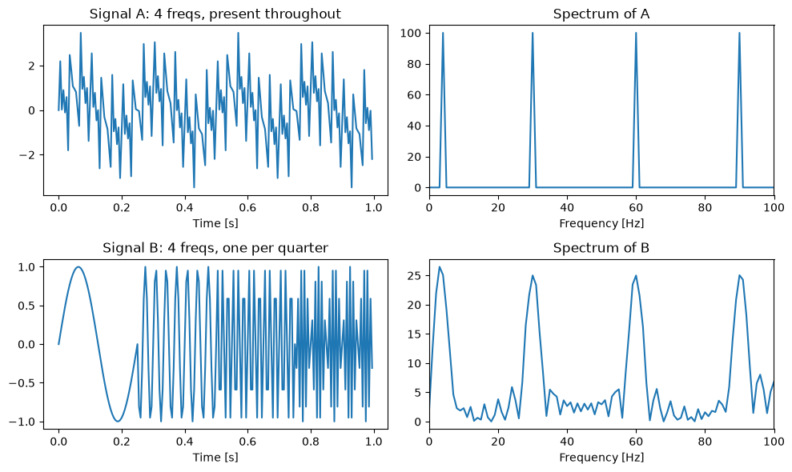
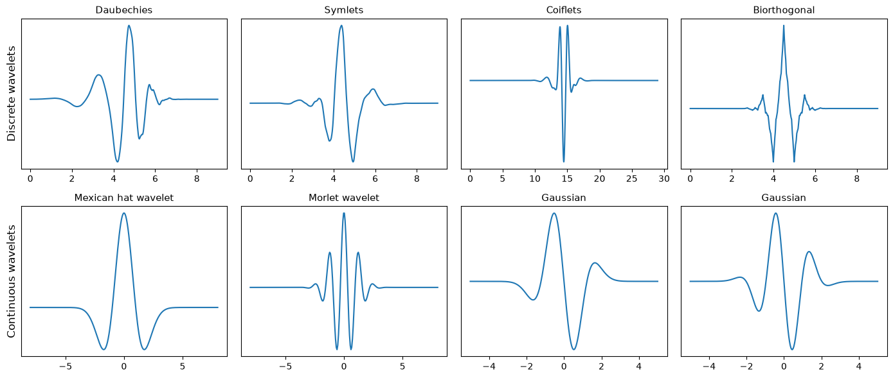
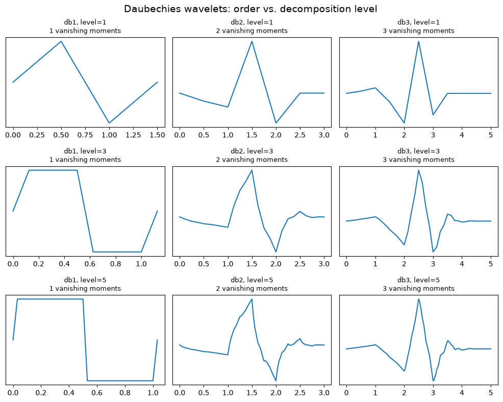
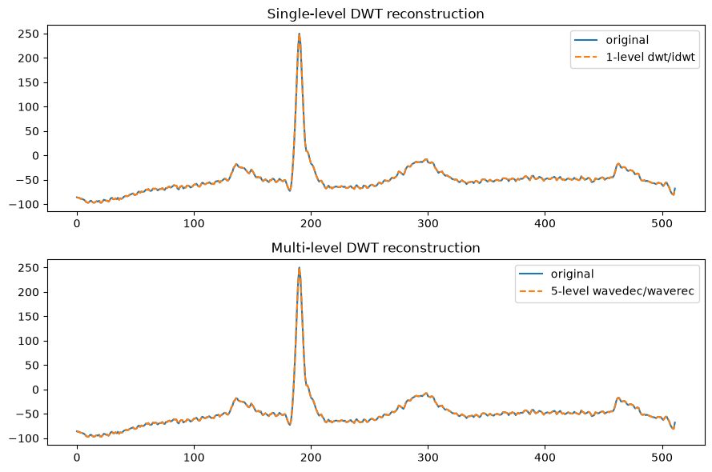
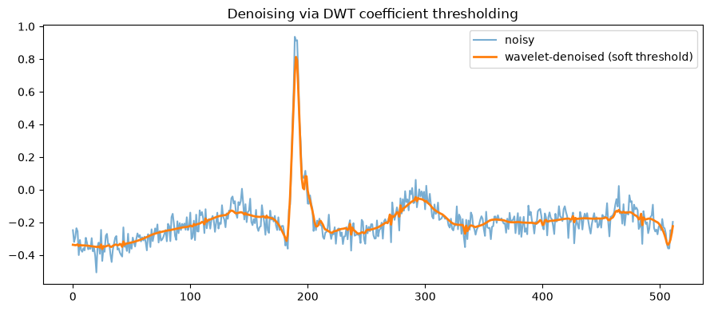
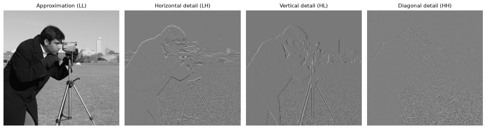
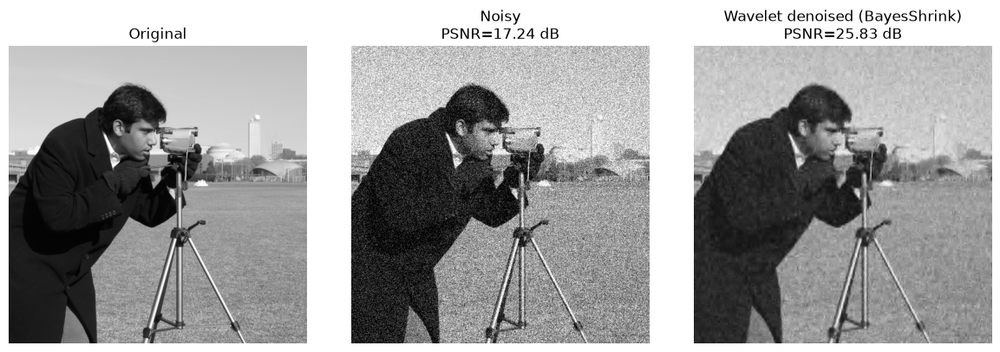

小波轉換#
本章重點
傅立葉轉換在頻率解析度與時間解析度之間的取捨，以及為何我們需要小波轉換
小波的基本概念：一個「母小波（mother wavelet）」透過尺度（scale）與平移（translation）產生一整族基底函數
離散小波轉換（DWT）如何把訊號逐階分解成近似（approximation）與細節（detail）係數
利用小波係數的閾值化（thresholding）對訊號或影像進行去噪
二維 DWT 的四個子帶（LL/LH/HL/HH）如何分別捕捉影像的低頻輪廓與不同方向的細節，並銜接到低訊噪比的 cryo-EM 影像處理
import numpy as np
import matplotlib.pyplot as plt
import skimage as ski
import pywt
from skimage.restoration import denoise_wavelet, estimate_sigma
from skimage.metrics import peak_signal_noise_ratio
from skimage.util import random_noise
plt.rcParams["image.cmap"] = "gray"
np.random.seed(0)
傅立葉轉換的時間—頻率限制#
上一章的傅立葉轉換有個很強的特性：它能精確告訴我們一個訊號裡「有哪些頻率」，卻完全無法告訴我們「這些頻率出現在什麼時間」。也就是說，傅立葉轉換在頻率域有高解析度，但在時間域解析度為零。
下面用一個例子說明：訊號 A 同時、全程包含 4、30、60、90 Hz 四種頻率；訊號 B 則是把同樣四個頻率依序切成四段、各自只出現在自己的時間區間內。兩個訊號在時間域看起來完全不同，但它們的振幅頻譜卻幾乎一樣——傅立葉轉換沒辦法分辨這兩種情況。
fs = 200 # 取樣率 [Hz]
t = np.linspace(0, 1, fs, endpoint=False)
freqs = [4, 30, 60, 90]
# 訊號 A：四個頻率全程同時存在
signal_const = sum(np.sin(2 * np.pi * fr * t) for fr in freqs)
# 訊號 B：四個頻率依序各佔訊號的四分之一
signal_seq = np.zeros_like(t)
quarter = len(t) // 4
for i, fr in enumerate(freqs):
seg = slice(i * quarter, (i + 1) * quarter)
signal_seq[seg] = np.sin(2 * np.pi * fr * t[seg])
freq_axis = np.fft.rfftfreq(len(t), d=1 / fs)
fig, axes = plt.subplots(2, 2, figsize=(10, 6))
axes[0, 0].plot(t, signal_const)
axes[0, 0].set_title("Signal A: 4 freqs, present throughout")
axes[0, 1].plot(freq_axis, np.abs(np.fft.rfft(signal_const)))
axes[0, 1].set_title("Spectrum of A")
axes[1, 0].plot(t, signal_seq)
axes[1, 0].set_title("Signal B: 4 freqs, one per quarter")
axes[1, 1].plot(freq_axis, np.abs(np.fft.rfft(signal_seq)))
axes[1, 1].set_title("Spectrum of B")
for ax in axes[:, 0]:
ax.set_xlabel("Time [s]")
for ax in axes[:, 1]:
ax.set_xlabel("Frequency [Hz]")
ax.set_xlim(0, 100)
fig.tight_layout()

兩張頻譜圖幾乎相同——都在 4、30、60、90 Hz 附近出現尖峰——但左邊的時間域波形卻明顯不同。這正是傅立葉轉換的根本限制：它只能回答「有哪些頻率」，回答不了「頻率出現在何時」。
一個折衷方案是短時傅立葉轉換（Short-Time Fourier Transform, STFT）：用一個滑動視窗把訊號切成許多小段，再對每一段分別做傅立葉轉換。但視窗長度一旦固定，時間解析度與頻率解析度的取捨就也跟著固定了——想要更精細的時間定位，就得犧牲頻率解析度，反之亦然。
小波轉換：兼顧時間與頻率解析度#
小波轉換（Wavelet Transform） 用不同「尺度（scale）」的小波，同時提供時間與頻率解析度：先用較大的尺度（小波「拉長」）觀察訊號的整體、低頻特徵，再用較小的尺度（小波「壓縮」）觀察局部、高頻的細節。
小波轉換的核心是一個母小波（mother wavelet） \(\psi(t)\)——一個能量集中在有限時間範圍內的小波形（相較之下，正弦波從 \(-\infty\) 延伸到 \(+\infty\)，完全沒有時間局部性）。透過縮放（scale, \(a\)）與平移（translation, \(b\)），母小波可以產生一整族基底函數，並與訊號逐一比對相似度，這就是連續小波轉換（Continuous Wavelet Transform, CWT）：
由於一維訊號經過 CWT 後，輸出同時含有尺度（scale，等同於頻率的倒數）與位移兩個維度，結果通常畫成二維的尺度圖（scaleogram）。
當我們把 \(a\)、\(b\) 限制為離散值——尺度以 2 的冪次遞增（\(a = 1, 2, 4, \dots\)）、平移取整數——就得到了離散小波轉換（Discrete Wavelet Transform, DWT），也是本章後續實作的重點。
小波家族：db／sym／coif 等#
傅立葉轉換只用正弦、餘弦兩種基底，但小波轉換存在許多不同的小波家族，每個家族在「緊緻性（compactness）」與「平滑度（smoothness）」之間做了不同的取捨，因此可依訊號特性挑選最合適的小波。Python 中最常用的實作是 PyWavelets 套件。一個合格的小波必須滿足兩個條件：能量有限（訊號在時間上是局部化的）且平均值為零（在零頻率處沒有直流分量），這也是它與一般濾波核最大的不同之處。
下面畫出幾種常見的離散小波（Daubechies, Symlets, Coiflets, Biorthogonal）與連續小波（Mexican hat, Morlet, Gaussian derivative）的波形。
def get_mother_wavelet(name, continuous=False):
if continuous:
wavelet = pywt.ContinuousWavelet(name)
out = wavelet.wavefun()
psi, x = out[0], out[-1] # continuous: (psi, x)
else:
wavelet = pywt.Wavelet(name)
out = wavelet.wavefun()
psi, x = out[1], out[-1] # discrete: (phi, psi, ..., x); psi 固定在 index 1
return x, psi, wavelet.family_name
discrete_wavelets = ["db5", "sym5", "coif5", "bior2.4"]
continuous_wavelets = ["mexh", "morl", "gaus3", "gaus5"]
fig, axarr = plt.subplots(nrows=2, ncols=4, figsize=(14, 6))
for col, name in enumerate(discrete_wavelets):
x, psi, family = get_mother_wavelet(name, continuous=False)
axarr[0, col].plot(x, psi)
axarr[0, col].set_title(family, fontsize=11)
axarr[0, col].set_yticks([])
axarr[0, 0].set_ylabel("Discrete wavelets", fontsize=12)
for col, name in enumerate(continuous_wavelets):
x, psi, family = get_mother_wavelet(name, continuous=True)
axarr[1, col].plot(x, psi)
axarr[1, col].set_title(family, fontsize=11)
axarr[1, col].set_yticks([])
axarr[1, 0].set_ylabel("Continuous wavelets", fontsize=12)
fig.tight_layout()

同一個家族內還可以有不同的「階數」，例如 Daubechies 的 db1、db2、db3……階數越高，消失矩（vanishing moments） 越多，小波也越平滑，但support（非零範圍）也越長。此外，選定小波後還要決定分解階數（decomposition level）：階數越高，小波被拉伸得越開，用來表示它的取樣點也越多。
db_names = pywt.wavelist("db")[:3] # db1, db2, db3
levels = [1, 3, 5]
fig, axarr = plt.subplots(nrows=len(levels), ncols=len(db_names), figsize=(10, 8))
fig.suptitle("Daubechies wavelets: order vs. decomposition level", fontsize=14)
for col, name in enumerate(db_names):
wavelet = pywt.Wavelet(name)
n_moments = wavelet.vanishing_moments_psi
for row, level in enumerate(levels):
_, psi, x = wavelet.wavefun(level=level)
axarr[row, col].plot(x, psi)
axarr[row, col].set_title(
f"{name}, level={level}\n{n_moments} vanishing moments", fontsize=9
)
axarr[row, col].set_yticks([])
fig.tight_layout()
plt.subplots_adjust(top=0.9)

離散小波轉換（DWT）：多階分解#
對訊號套用 DWT，會把它拆成一組近似係數（approximation coefficients, cA）——代表訊號的低頻、粗略結構——以及一組細節係數（detail coefficients, cD）——代表高頻的局部變化。PyWavelets 提供兩種做法：
用
pywt.dwt()做單階分解，取得 \((cA_1, cD_1)\)；如果想繼續分解，可以再對 \(cA_1\) 呼叫一次dwt()，逐階往下。用
pywt.wavedec()一次做多階分解，直接取得最終近似係數與每一階的細節係數；pywt.waverec()則是它的反轉換。
下面用一段心電圖（ECG）訊號示範，並驗證分解後再重建，可以幾乎完美地拿回原始訊號。
ecg = pywt.data.ecg()
cA1, cD1 = pywt.dwt(ecg, "db4")
reconstructed_1level = pywt.idwt(cA1, cD1, "db4")
coeffs = pywt.wavedec(ecg, "db4", level=5)
reconstructed_multilevel = pywt.waverec(coeffs, "db4")
fig, axes = plt.subplots(2, 1, figsize=(9, 6))
axes[0].plot(ecg[:512], label="original")
axes[0].plot(reconstructed_1level[:512], "--", label="1-level dwt/idwt")
axes[0].legend(loc="upper right")
axes[0].set_title("Single-level DWT reconstruction")
axes[1].plot(ecg[:512], label="original")
axes[1].plot(reconstructed_multilevel[:512], "--", label="5-level wavedec/waverec")
axes[1].legend(loc="upper right")
axes[1].set_title("Multi-level DWT reconstruction")
fig.tight_layout()

閾值化去噪#
由於細節係數對應訊號中的高頻成分，如果訊號中混有高頻雜訊，我們可以先做多階 DWT 分解，把數值較小的細節係數視為雜訊、用 pywt.threshold() 將它們「軟閾值化（soft-threshold）」——也就是把小於門檻值的係數收縮或歸零——再重建訊號，就能達到去噪的效果，而且不太會傷害訊號中真正的大尺度結構。
def wavelet_denoise(sig, wavelet="db4", threshold_ratio=0.1):
coeffs = pywt.wavedec(sig, wavelet, mode="per")
threshold = threshold_ratio * np.nanmax(sig)
coeffs[1:] = [pywt.threshold(c, value=threshold, mode="soft") for c in coeffs[1:]]
return pywt.waverec(coeffs, wavelet, mode="per")
x = pywt.data.ecg().astype(float) / 256
sigma = 0.05
x_noisy = x + sigma * np.random.randn(x.size)
x_denoised = wavelet_denoise(x_noisy, threshold_ratio=0.1)
fig, ax = plt.subplots(figsize=(9, 4))
ax.plot(x_noisy[:512], label="noisy", alpha=0.6)
ax.plot(x_denoised[:512], label="wavelet-denoised (soft threshold)", linewidth=2)
ax.legend()
ax.set_title("Denoising via DWT coefficient thresholding")
fig.tight_layout()

二維 DWT：LL/LH/HL/HH 四個子帶#
二維訊號（影像）的 DWT，可以看成先對每一列做一維 DWT，再對每一欄做一維 DWT，最後得到四個子帶：
LL（近似）：水平、垂直方向都是低通——影像的整體輪廓與平均亮度。
LH（水平細節）：水平方向低通、垂直方向高通——主要對應水平邊緣。
HL（垂直細節）：垂直方向低通、水平方向高通——主要對應垂直邊緣。
HH（對角細節）：兩個方向都是高通——主要對應對角邊緣與高頻紋理。
image = ski.util.img_as_float(ski.data.camera())
LL, (LH, HL, HH) = pywt.dwt2(image, "bior1.3")
titles = ["Approximation (LL)", "Horizontal detail (LH)", "Vertical detail (HL)", "Diagonal detail (HH)"]
fig, axes = plt.subplots(1, 4, figsize=(14, 4))
for ax, band, title in zip(axes, [LL, LH, HL, HH], titles):
ax.imshow(band, cmap="gray")
ax.set_title(title, fontsize=11)
ax.axis("off")
fig.tight_layout()

和一維情形一樣，二維 DWT 的細節子帶也可以用閾值化去噪。下面對影像加入高斯雜訊，再用 scikit-image 內建的 denoise_wavelet（採用 BayesShrink 方法，自動為每個子帶估計適合的閾值）進行去噪，並用 PSNR 定量比較去噪前後的品質。
original = ski.util.img_as_float(ski.data.camera())
sigma_noise = 0.15
noisy = random_noise(original, var=sigma_noise**2)
sigma_est = estimate_sigma(noisy)
denoised = denoise_wavelet(
noisy, method="BayesShrink", mode="soft", wavelet="db4", rescale_sigma=True
)
psnr_noisy = peak_signal_noise_ratio(original, noisy)
psnr_denoised = peak_signal_noise_ratio(original, denoised)
fig, axes = plt.subplots(1, 3, figsize=(12, 4))
axes[0].imshow(original)
axes[0].set_title("Original")
axes[0].axis("off")
axes[1].imshow(noisy)
axes[1].set_title(f"Noisy\nPSNR={psnr_noisy:.2f} dB")
axes[1].axis("off")
axes[2].imshow(denoised)
axes[2].set_title(f"Wavelet denoised (BayesShrink)\nPSNR={psnr_denoised:.2f} dB")
axes[2].axis("off")
fig.tight_layout()
print(f"估計的雜訊標準差 (estimate_sigma): {sigma_est:.4f}")
估計的雜訊標準差 (estimate_sigma): 0.1359

與 cryo-EM 的連結
Cryo-EM 顆粒影像的訊噪比（SNR）通常極低——為了避免電子束損傷樣品，實驗上必須把電子劑量壓得很低，代價就是影像中真實訊號往往被雜訊淹沒。小波去噪正好對症下藥：真實的結構訊號主要落在少數幾個較大的小波係數上，而雜訊則分散在許多細節係數中且數值普遍偏小，因此閾值化能在盡量保留結構的前提下壓低雜訊，是顆粒影像前處理與可視化時常見的增強手法之一。
更重要的是多尺度分解這個概念本身，會在後續章節反覆出現：一個蛋白質顆粒的不同結構特徵，本來就分布在不同的空間尺度上——分子整體的外形輪廓是低頻、粗尺度的資訊，而二級結構、螺旋溝槽等細節則是高頻、細尺度的資訊。無論是小波的多階分解，或是稍後會看到的多重解析度重建策略，核心想法都是一致的：先在粗尺度上掌握大致的形狀，再逐步加入細尺度的細節，而不是一開始就企圖在單一尺度上解決所有問題。